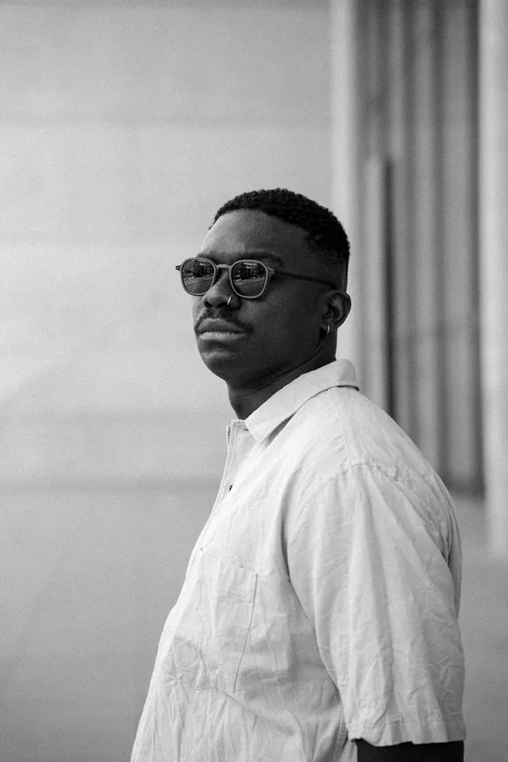

DJ in Basel
Ein Kundenabend mit Gästen aus fünf Nationen, ein Marken-Event am Rhein oder eine Hochzeit, bei der halb Europa mittanzt: In Basel ist das Publikum selten einsprachig. Benji Holiday reist aus München an und spielt ein Open-Format-Set, das genau diese Mischung zusammenbringt.
Resident-Erfahrung: Rote Sonne · Bob Beaman · Harry Klein

Ein DJ für ein internationales Publikum
Basel liegt am Rheinknie, genau dort, wo die Schweiz, Deutschland und Frankreich aufeinandertreffen. Viele Menschen pendeln täglich über die Grenze, internationale Konzerne und Messen bringen Fachleute aus der ganzen Welt in die Stadt. Wer hier ein Firmenevent organisiert, hat deshalb fast immer ein gemischtes Publikum vor sich: Schweizer Kolleginnen, Gäste aus dem Elsass und aus Südbaden, dazu Teams aus Übersee, die Englisch als gemeinsame Sprache nutzen.
Für einen DJ ist das eine besondere Aufgabe. Ein Set, das nur auf deutsche Partyklassiker setzt, verliert die Hälfte des Raums. Benji Holiday arbeitet als Open Format DJ: Er verbindet Hip-Hop, Pop, House und Afro House mit Klassikern aus mehreren Jahrzehnten und achtet darauf, wer gerade tanzt und wer noch am Rand steht. Das hat er als Resident in Münchner Clubs wie der Roten Sonne und dem Harry Klein gelernt.
Firmenevents und Marken-Abende
Für Basel bietet Benji vor allem Corporate- und Brand-Events an: Kundenabende, Jubiläen, Sommerfeste, Store-Events oder ein After-Show-Abend nach einem Messetag. Aus seiner Arbeit für Lacoste, Philipp Plein und BOSS kennt er die Anforderungen von Marken, die auf ihren Auftritt achten. Die Musik soll zur Corporate Identity passen, Gespräche beim Empfang nicht übertönen und erst dann Gas geben, wenn der offizielle Teil vorbei ist. Für solche Anlässe sind das Fashion & Brand Event und die Premium Brand Experience gedacht.
Hochzeiten am Rhein
Auch für private Feiern in Basel kannst du Benji buchen. Die Altstadt rund um das Münster, die Rheinufer und die Weingegenden im Umland bieten schöne Kulissen für Hochzeiten. Gerade binationale Paare schätzen einen DJ, der Songs aus beiden Familien einbaut und dabei den roten Faden behält.
Anreise aus München, offen kalkuliert
Von München nach Basel sind es rund 400 km. Die Anfahrt wird nach Kilometern berechnet, bei Abend-Events kommt gegebenenfalls eine Übernachtung dazu. Beides wird vorab transparent im Angebot ausgewiesen. Die Formalitäten für den Grenzübertritt mit dem Equipment klären wir ebenfalls vorab, damit du dich am Tag selbst um nichts kümmern musst.
Faire, klare Preise
Alle Preise in Euro, detaillierte Aufschlüsselung auf der DJ-Übersicht.
DJ in Basel — gut zu wissen
Wie sieht es mit dem Grenzübertritt und dem Equipment aus?
Basel liegt in der Schweiz, also außerhalb der EU. Die Formalitäten für den Grenzübertritt mit Anlage und Licht klären wir vorab gemeinsam, damit am Veranstaltungstag nichts offen ist.
In welcher Währung bekomme ich das Angebot?
Alle Preise sind in Euro angegeben, genau wie auf der DJ-Übersicht. Die Pakete beginnen bei 899 € netto, die Marken-Pakete bei 1.000 € und 1.500 € netto.
Unsere Gäste sprechen Deutsch, Französisch und Englisch. Wie moderierst du?
Ansagen mache ich auf Deutsch oder Englisch, je nachdem, was bei euren Gästen besser ankommt. Musikalisch spielt Sprache bei einem Open-Format-Set ohnehin eine kleinere Rolle: Ich mische internationale Hits so, dass sich alle angesprochen fühlen, und nehme gern Wunschtitel aus euren Ländern auf.
Was kostet die Anreise von München nach Basel?
Basel liegt rund 400 km von München entfernt. Die Anfahrt berechne ich mit 0,35 €/km, bei Abend-Events kommt gegebenenfalls eine Übernachtung dazu. Beides siehst du vorab transparent im Angebot.
Wie früh sollten wir anfragen, wenn unser Event in eine Messewoche oder die Fasnacht fällt?
So früh wie möglich. In diesen Wochen sind in Basel Locations und Hotels schnell vergeben. Wenn wir den Termin rechtzeitig fixieren, lässt sich auch eine Übernachtung entspannt planen.